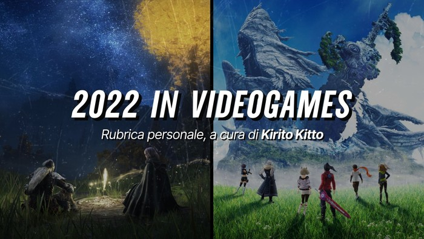

Year in Videogames 2022
Benvenuti nella seconda edizione della rubrica Year in Videogames, un recap annuale dei titoli giocati nel corso dell’anno per ricordare i punti più alti (e bassi) della mia carriera videoludica.

Game of the Year Award: titoli con una qualità realizzativa eccellente o il cui viaggio in loro compagnia è stato memorabile.
- Elden Ring
- Death Stranding
- Xenoblade Chronicles 3
Great Experience Award: titoli che non hanno vinto il premio “Game of the Year” ma che ritengo memorabili per qualità realizzative o impatto emotivo.
- Superliminal
- Marvel’s Spiderman
- Kirby and the Forgotten Land
- Xenoblade Chronicles: DE
Soundtrack Award: titoli con una colonna sonora eccellente nel suo complesso, con diverse OST memorabili.
- NieR Replicant
- Tales of Arise
- Xenoblade Chronicles DE
- Xenoblade Chronicles 3
Music Memory Award: titoli che non hanno vinto il “Soundtrack Award” ma presentano una o più OST particolarmente memorabili.
- Xenoblade Chronicles 2: Torna
- Assassin’s Creed II
- Death Stranding
- Code Vein
- Bravely Default
- Outer Wilds: Echoes of the Eye
Above Expectation: titoli che mi hanno divertito molto più del previsto.
- Code Vein
- Tales of Arise
Below Expectation: titoli che non hanno raggiunto le mie aspettative, forse ingiustamente troppo alte.
- eFootball
- Hitman
- Finding Paradise
- Devil May Cry 5
- Sekiro: Shadows Die Twice
- Subnautica
- Shredders
Bad Optimization: titoli con una realizzazione tecnica insufficiente che rovina quello che poteva essere un bel prodotto.
- Pokemon Scarlet & Violet
Multiplayer and Co-Op Award
- Fifa 21
- RL: SideSwipe
- Fortnite
Moment Memory Award: titoli che non hanno vinto i premi “Emotional Award” o “Great Game Award” ma che presentano una scena particolarmente emotiva o memorabile.
- Xenoblade Chronicles 2: Torna
- Outer Wilds: Echoes of the Eye
Honorable Mention: titoli che non sono riusciti a vincere un premio.
Tripla A
- Dark Souls
- Metroid Dread
- Final Fantasy VII Remake
- Mario + Rabbids Kingdom Battle
- Microsoft Flight Simulator
- Uncharted 4: A Thief’s End
- God of War
- Portal 2
Indie
- Exo One
- Cuphead
- Death’s Door
- Stray
- Sifu
- Mad Rat Dead
- Neon White
- Inscryption
- Firewatch
- The Pathless
Other games I played: Abzu, Solar Ash, Journey, Assassin’s Creed, EuroTruck Simulator 2, Battlefield: Bad Company 2, Brawlhalla, Bus Simulator 21, Cult of the Lamb, Dicey Dungeon, Fall Guys, Finding Paradise, Getting Over It, Ghostrunner, Impostor Factory, Mario Kart 7, Minecraft, Mini Motorways, Myst, Narita Boy, OneShot, Portal, Recompile, Riders Republic, Road 96, Rocket League, Shovel Knight, Sid Meier’s Pirates!, SteelRising, The Long Dark, The Pedestrian, Thomas was Alone, Tower of Fantasy, Townscape, Train Sim World 2, Unpacking.